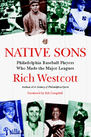

<body bgcolor="#FFFFFF" text="#000000" link="#0000FF" vlink="#CC0000" alink="#CC0000"><center><hr width="350" size="1" align="center" noshade>Profiles of local athletes who made the big leagues<hr width="350" size="1" align="center" noshade><p><a href="https://cdcshoppingcart.uchicago.edu/Cart/ChicagoBook.aspx?ISBN=9781592132157&&PRESS=temple" target="_top">Buy this book!</a> | <a href="https://cdcshoppingcart.uchicago.edu/Cart/Cart.aspx?PRESS=temple" target="_top">View Cart</a> | <a href="https://cdcshoppingcart.uchicago.edu/Cart/Cart.aspx?PRESS=temple" target="_top">Check Out</a></p><p></p></center><!--none//--><h1>Native Sons</h1>
<H2>Philadelphia Baseball Players Who Made the Major Leagues</H2>
<H2><!-- Foreword by Bill Campbell --></H2>
<h3>Rich Westcott, foreword by Bill Campbell</h3>
<P>paper 1-59213-215-4 $24.95, Oct 03, <FONT COLOR=#990033>Available</FONT>
<BR> 184 pp
5.5x8.25
1&nbsp;table 66&nbsp;halftones
</P><BLOCKQUOTE><I>"Rich Westcott's breezy writing is chock full of quirky anecdotes. He is at his best when he's unearthing such gems as those about Aloysius Travers, a St. Joseph's College student manager, who pitched one game for Detroit...'the 24-2 loss might have had something to do with Travers's decision to become a priest.' </i>Native Sons<i> should be of interest to longtime Philadelphia baseball fans and his loyal audience of readers won't be disappointed."</i>
<br>&#151<b>Larry Platt</b>, editor-in-chief of <i>Philadelphia Magazine</i> and author of <i>Only The Strong Survive: The Odyssey of Allen Iverson</i><i></I></BLOCKQUOTE>
<p>Reggie Jackson (Wyncote). Roy Campanella (Philadelphia). Pat Kelly (also Philadelphia). From the most famous to the little known, 350 major league baseball players came from the Philadelphia area. Now, for the first time, celebrated baseball historian Rich Westcott brings these "native sons" home.
<p>In this short book, Westcott offers profiles of some of the most celebrated, talented, and often just hardest-working athletes to ever lift a bat and glove in major league baseball. He tells of the athletes like Mr. October, who were born here and went away, and others, like Kensington-born Jimmie Wilson, who became a star in his own hometown. Throughout <i>Native Sons</i>, Westcott recounts the startling careers of some incredible players, and recreates for readers the magical place they all called home.
<p>Rich Westcott's Philadelphia All-Star Team:
<ul><li><p>Reggie Jackson (Wyncote)
<li><p>Goose Goslin (Salem, NJ)
<li><p>Del Ennis (Philadelphia)
<li><p>Mickey Vernon (Marcus Hook)
<li><p>Eddie Stanky (Philadelphia)
<li><p>Jimmy Dykes (Philadelphia)
<li><p>Buck Weaver (Pottstown)
<li><p>Roy Campanella (Philadelphia)
<li><p>Bucky Walters (Philadelphia)
<li><p>Herb Pennock (Kennett Square)
<li><p>Ray Narleski (Camden, NJ)
<li><p>Eddie Miksis (Burlington, NJ)</ul>
<BR>&nbsp;<h2>Excerpt</h2><P>Excerpt available at <a href="http://www.temple.edu/tempress">www.temple.edu/tempress</a></p>
<BR>&nbsp;<h2>Reviews</h2>
<p><i>"</i>Native Sons<i> again demonstrates Rich Westcott's skills as one of major league baseball's outstanding historians. For the first time, Westcott has compiled a complete, well-documented, vividly written account of every player and manager who was born in the Philadelphia area and realized the dream of making it to the big leagues. They're all here&#151;from Cal Abrams to Bert Yeabsley, as well as many of the significant records and lively anecdotes that have helped make the City of Brotherly Love such a colorful part of our National Pastime."</i>
<br>&#151<b>Robert S. Lyons</b>, author of <i><a href="1622_reg.html" target="_top">Palestra Pandemonium: A History of the Big 5</a></i>
<p><i>"Another fine effort by one of baseball's top historians. Filled with information about players you have heard about, grew up with, or are still currently playing. From MVPs to those who only played one inning, if they're from the area, they're in this book."</i>
<br>&#151<b>Jack Scheuer</b>, Associated Press Correspondent who has covered local sports for over 35 years
<p><I>"Chock full of human interest stories only an insider would know...this is definitely a must read for the Hot Stove League. Get your copy pronto."</I>
<br>&#151<b><I>The Philadelphia Public Record</I></b>
<BR>&nbsp;<h2>Contents</h2><P>
<p>Foreword &#150 Bill Campbell
<br>Introduction
<br>1. Philly's Finest: An all-star team from the Philadelphia area
<br>2. Some Stayed Home: They played with the Phillies or Athletics
<br>3. Standouts from the Surrounding Area: Top players from the Philadelphia suburbs, South Jersey, and northern Delaware
<br>4. City Guys Who Got Away: Players who left town to perform elsewhere
<br>5. The Current Contingent: Recent major leaguers from the region
<br>6. Rarities, Oddities, and Ironies: The status quo has not always been maintained
<br>7. The Decision Makers: Managers of all kinds dictated their brands of strategy
<br>8. Long, Long Ago: Noteworthy players from the 19th century
<br>9. Strongly Represented: Why have so many major leaguers come from the Philadelphia area?
<br>10. The Best of the Best: Facts, figures, and league leaders (since 1900)
<br>11. Everyone Who Played: A complete list of 20th- and 21st-century major league players from the Philadelphia region
<br>Photo Credits
<br>About the Author
</P><BR>&nbsp;<H2>About the Author(s)</H2>
<table><tr><td valign="top"><img src="/tempress/authors/1719_au1.gif" height="90" width="75"></td><td width="100%" valign="middle"><p><b>Rich Westcott</b> is a lifelong resident of the Philadelphia area, and has known or covered many of the players in this book. His own undistinguished baseball career came to an inglorious conclusion when he flunked a trial with the Philadelphia Athletics (remember them?). Westcott has been a writer and editor for more than forty years, and is the founder and former editor and publisher of <i>Phillies Report</i>. He is the author of thirteen other books, including twelve on baseball.</P></td></tr></table>
<BR><H2>Subject Categories</H2>
<p><A HREF="/tempress/sports.html" TARGET="_top">Sports</a>
<BR><A HREF="/tempress/philly.html" TARGET="_top">Philadelphia Region</a>
<BR><A HREF="/tempress/general.html" TARGET="_top">General Interest</a>
</p>
<p align="center"><a href="https://cdcshoppingcart.uchicago.edu/Cart/ChicagoBook.aspx?ISBN=9781592132157&&PRESS=temple" target="_top">Buy this book!</a> | <a href="https://cdcshoppingcart.uchicago.edu/Cart/Cart.aspx?PRESS=temple" target="_top">View Cart</a> | <a href="https://cdcshoppingcart.uchicago.edu/Cart/Cart.aspx?PRESS=temple" target="_top">Check Out</a></p><p><font face="Arial" size="1"><a href="copyright.html" onMouseOver="window.status='Web Copyright Policy';return true;" onMouseOut="window.status=''" title="Web Copyright Policy">&copy;</a> 2015 <a href="http://www.temple.edu" target="new" onMouseOver="window.status='Link to Temple University home page';return true;" onMouseOut="window.status=''" title="Link to Temple University home page">Temple University</a>. All Rights Reserved. http://www.temple.edu/tempress/titles/1719_reg.html</font></p>